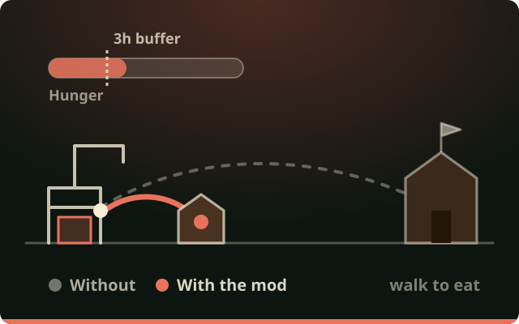

A three-hour buffer
Hunger and Thirst get the same "hours of warning" the game already gives bots, through two tiny blueprint patches. Working beavers keep that buffer in hand instead of running the bar to zero.
Working beavers top off before a shift they cannot finish, leave far jobs early enough to reach food before the hunger penalty, and eat at the closest stocked storage instead of crossing the map for a fancier meal.

In the base game a working beaver only leaves the job once hunger or thirst is already at zero, and then walks to whichever food scores the most need points, however far away. This mod plans ahead and walks less.
Hunger and Thirst get the same "hours of warning" the game already gives bots, through two tiny blueprint patches. Working beavers keep that buffer in hand instead of running the bar to zero.
A beaver at a far site measures the walk to the closest stocked storage and leaves early enough to arrive with the buffer intact. No more half-speed work while trudging back.
If a storage is within half an hour's walk and the beaver would not last the rest of the shift, it eats now. At the start of a shift that is breakfast; mid-shift it catches a hauler passing a warehouse.
A builder who has just reserved a site it would not last at lets the site go, through the game's own "could not get there" path, and tops off first. Another builder picks the site up.
Every trip the mod starts, and the game's own penalty-state trips during working hours, goes to the storage with the shortest walk for that need. A fancier food wins only when it costs at most a quarter hour more.
Evenings and days off run the game's own behavior, so beavers still seek out variety and wellbeing buildings. Food consumption per day is unchanged: only its timing moves.
The mod decides; the game does the walking, the reserving and the eating.
Each adult beaver gets one extra behavior, asked at exactly the moments the game would hand it the next piece of work. It runs only for employed beavers during working hours.
Hours left until a need hits zero, hours left in the shift, and the real walking time to the nearest stocked storages, using the game's own path queries. Storages the beaver could not take a full unit from are skipped before any path is computed.
When a rule fires, the planner returns one of the game's own storage behaviors. Walking in, reserving the unit, eating and the animation are all vanilla, and the trip is recorded in saves as vanilla too.
Built for large colonies and for co-op, with a few deliberate edges.
The mod keeps only caches rebuilt from the simulation. A save made with the mod loads without it and the other way round, so it can be added to or removed from any colony.
If a game update moves one of the five hooks, the mod installs none of them and says so in the log. If anything in the mod throws, it logs the stack trace once and switches itself off for the session.
Running a large colony? A well-fed beaver sleeps until a rule could apply, a beaver near a trigger re-checks every half hour of game time, and a check costs at most eight path queries. The daily log line reports the totals so the cost stays visible.
| Game version | Timberborn 1.1.2.4. Built and checked against 1.1.2.4; the hooks were written from that version's code and disable themselves if a later version moves them. |
|---|---|
| Multiplayer | Every decision reads only the simulation, with fixed ordering and tie-breaks, so peers running the same version with an identical settings file make identical decisions. The log prints one Simulation settings: line at startup to compare. |
| Other mods | Requires Harmony from the Steam Workshop. A mod that also edits the Hunger or Thirst blueprints will merge with this one by load order; a mod that replaces the game's need-picking behavior for beavers would overlap. |
| Saves | Untouched. You can remove the mod at any time. |
| Language | No user interface text. Log lines are in English. |
This is an alpha: it builds clean and its arithmetic is checked, and the first colonies to run it are the ones that will confirm it. Try it on a copy of your save first.